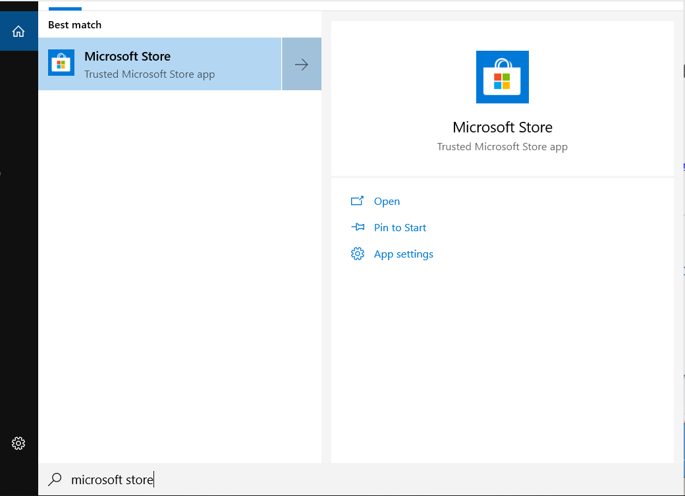
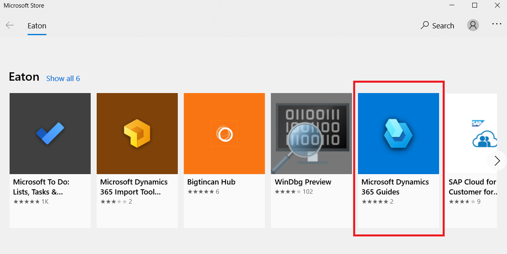
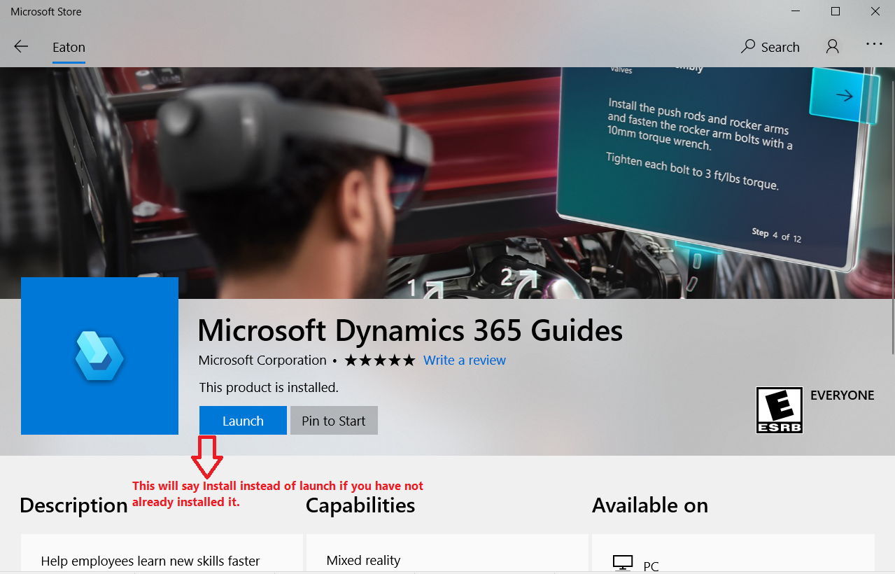
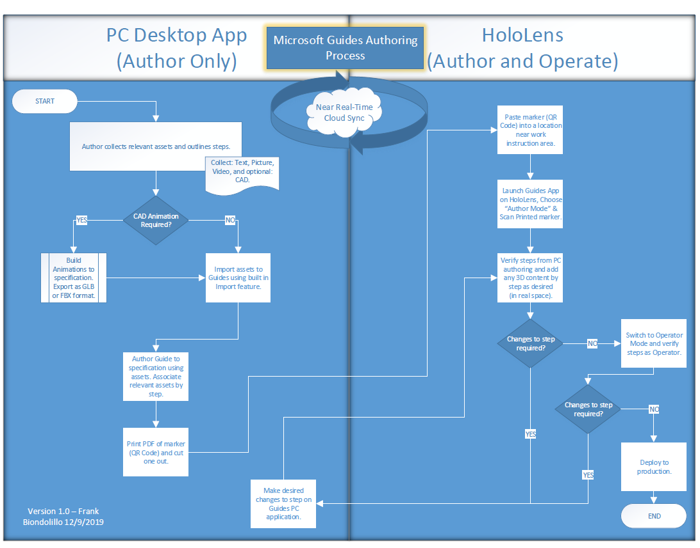
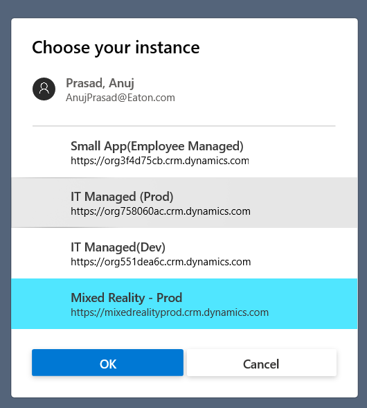
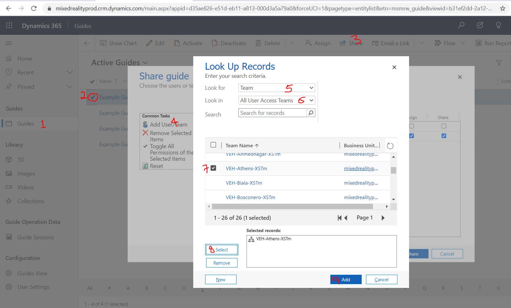
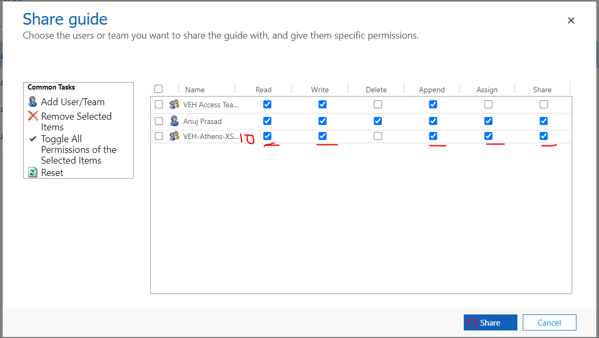

Overview of Dynamics 365 Guides
Quick Concept & Reference Links
- Overview of authoring a guide in Dynamics 365 Guides
- Overview of operating a guide in Dynamics 365 Guides
- How to make a great mixed reality guide
- How to share guides with Access Teams
- Share Guides with user or access teams
- Know Issues
Setting Up Authoring Environment on Eaton PC
- On your computer Search for “Microsoft Store” and then click to open it

Note: If Microsoft store is not working correctly then raise an ITSC ticket.
- Now, search for “Microsoft Dynamics 365 Guides” and click on it.

- On next screen, click on install button to install it

Guides Authoring Process

How to use D365 Guides in production environment on PC?
- You will use your own Eaton email ID (like anujprasad@eaton.com) to login to Guides on PC and do the authoring on PC. For authoring/operate mode on HL you will use HoloLens-VEH-<Site name>-1@Eaton.onmicrosoft.com account to auto login to Guides
- Once you are login into Guides select the instance with name – “Mixed Reality - Prod”

- Create New Guide and import all the assets that describes a step and then share the Guide & assets with corresponding HL user account for your respective site using the details described in section – “How to share a Guide or an asset (Image/video/3D parts)”
How to share a Guide or an asset (Image/video/3D parts) to Access Team on PC
Authoring on PC will have one additional step that needs to be done – Whenever you create a NEW Guides or add any NEW assets (such as pictures/videos/custom 3D model) to existing guides you will have to share that Guides/asset with your site corresponding Access Team (XS Tm) – “VEH-<Site name>-XSTm”.
- Open this this link on web browser on PC (Click Here)
- Then follow the below steps highlighted in red (in below images) in the order 1, 2 ,3 etc… till 11, in order to share Guides or any library content such as 3D, Images and Videos with HL user account & other PC authors of your site (Please Note: You can use the same procedure to share 3D, Images & Video that you find in the left hand side menu just below Guides highlighted with numeric 1 in red in below image)


Steps description
- Select the asset that needs to be shared (Guides/3D/Images/Videos) – In above example screenshot “Guides” is selected
- Select the active object you want to share – In above example screenshot “Example Guide” is selected
- On the top menu click on “Share” button,
- In the Share guide window that opens, select the option – “Add User/Team”
- In the next screen called “Look Up Records”, select “Team” in “look for” field/filter
- Again, in the same screen “Look Up Records”, select “All User Access Team in “look in” field/filter
- Select the checkbox beside your site access team name. In above screen shot it’s showing – “VEH-Athens-XSTm” as an example
- Click on select button
- Click on Add button
- Give user follow permission by selecting the checkboxes for – “Read”, “Write”, “Append”, “Assign” & “Share”
- Click on Share button.
- Done
How to use D365 Guides in production environment on HoloLens?
Guides Best Practices
Videos showing D365 Guides best practices
- Watch a video about PC authoring
- Watch a video about HoloLens authoring on HoloLens1
- D365 Guides How To Videos
Naming Convention
- Choose Guides Name as the short name for the procedure/machine
- Choose the File names (image/video/3D files) as: <Guides name ><Machine Name>-<Task#>-<Step#>